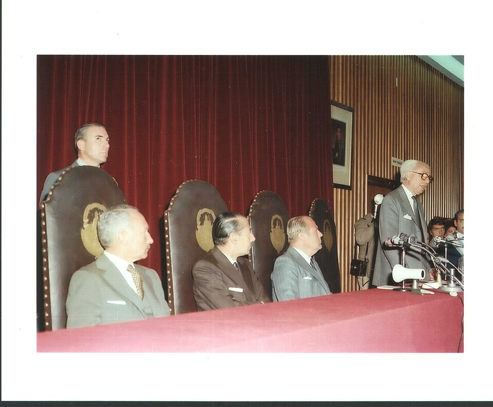

A42-POL-006 // HISTORICAL CLAIM REVIEW
Argentina's 1976 Coup and State Terror
Assessment: The military coup and systematic state violence are established.


The precise allegation
Argentina's armed forces overthrew Isabel Perón in March 1976 and established a dictatorship responsible for systematic disappearances, torture, and killing. The coup and state campaign are documented. US officials knew of repression and maintained relations; claims that Washington directly planned the coup or ordered each crime require case-specific evidence and should not be collapsed into the documented domestic command structure.
Chronology and political context
Military leaders removed Perón on March 24, 1976, replacing her government with a junta that called its rule the National Reorganization Process. Security forces targeted left-wing activists, labor organizers, students, and others. The dictatorship's clandestine detention and disappearance system operated nationwide. Democratic government returned in 1983, followed by trials and truth-seeking efforts.
Primary historical record
Argentina's CONADEP report Nunca Más, trial judgments, military records, and declassified US files document the coup and state terrorism. The Trial of the Juntas established command responsibility in court. US diplomatic records reveal awareness of abuses and policy debate; they do not show a single US order directing the coup or all subsequent crimes.
Corroboration and contrary evidence
Survivor testimony, forensic identification, and documentation from human-rights organizations independently corroborate the scale of repression. Historians including Peter Kornbluh trace US policy and knowledge. The evidence supports complicity in diplomatic support or tolerance at particular moments, while the Argentine armed forces designed and administered the internal repression system.
What remains uncertain
The full number of victims remains uncertain because many bodies and records were destroyed; estimates differ. The extent of coordination among regional dictatorships under Operation Condor is documented but varied by operation. Individual foreign officials' responsibility for enabling abuses must be evaluated with specific records rather than broad attribution.
Calibrated verdict
The military coup and systematic state violence are established. US officials had significant knowledge and maintained relations, but direct US operational authorship of the Argentine junta's crimes is not demonstrated. The strongest assessment recognizes both Argentine command responsibility and foreign policies that sometimes facilitated or tolerated the regime.
What evidence could change this assessment
Newly declassified US and Argentine communications could refine advance knowledge and material assistance. Complete military archives and victim identification records could clarify chains of command and casualty estimates. Evidence of direct operational tasking from foreign officials would materially alter attribution; current evidence supports influence and complicity more narrowly.
Sources and source limits
- U.S. National Archives — Declassified Records Shed Light on Argentine HistoryOfficial archival article linking released records about the dictatorship; it provides documentary evidence of U.S. knowledge, not a substitute for Argentina’s truth commission report.
- National Security Archive — Argentina Dirty War document collectionDeclassified US documents show diplomatic awareness and policy; archive selection and redactions limit completeness.
- Trial of the Juntas — Federal Court judgment materialsJudicial records establish command responsibility and crimes; court findings concern defendants and evidence presented, not every historical actor.